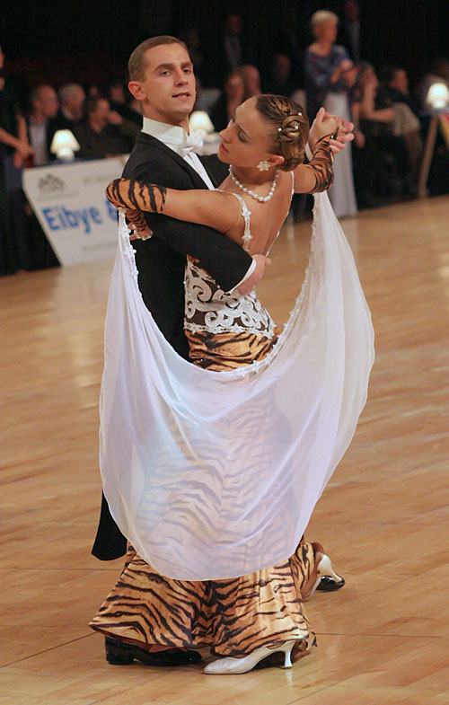
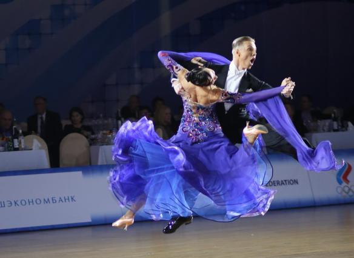
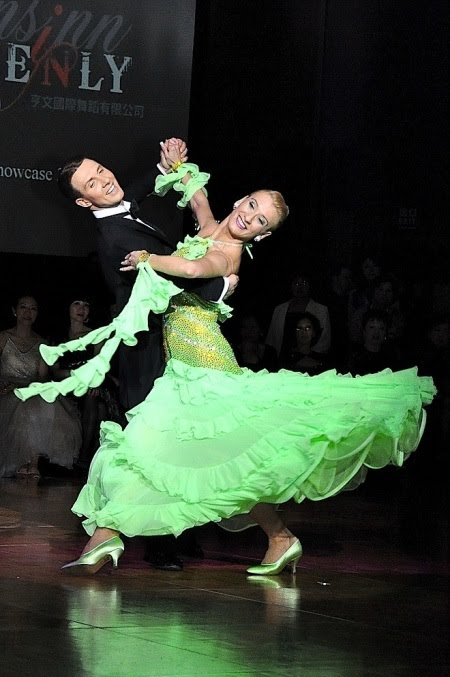

walc angielski
walc wiedeński
tango
quickstep
foxtrot
Taniec pochodzi z Anglii i po raz pierwszy został wykonany około roku 1910 w Londynie. Metrum 3/4, tempo 30 – 31 taktów/minutę, którego technikę i styl ustalono w Anglii w 1921 roku. Jest tańcem swingowym, także metronometrycznym i wirowym. Na początku pierwszego uderzenia tańczy się płasko, pod koniec zaczyna się akcja unoszenia. W drugim kroku kontynuuje się unoszenie, zaś pod koniec trzeciego opada. Na turniejach tańca towarzyskiego jest tańczony przez pary jako pierwszy z tańców standardowych.

taniec towarzyski, szybsza odmiana walca. Tempo walca wiedeńskiego wynosi ok. 60 taktów na minutę, co przy nieparzystym metrum (zazwyczaj 3/4) daje ok. 180 uderzeń na minutę. Charakterystyczne dla tego tańca są szybkie wirowe obroty. Po raz pierwszy został wykonany w 1815, podczas kongresu wiedeńskiego. Walc wiedeński należy do światowego programu tanecznego i jako taki jest tańczony na turniejach tańca towarzyskiego.

taniec towarzyski pochodzący z Buenos Aires w Argentynie i Montevideo w Urugwaju. Tango jest także rodzajem muzyki. Obecnie istnieje wiele form tanga, zarówno muzycznych jak i tańca – tango argentyńskie (i jego odmiany tango vals, tango nuevo, milonga), tango amerykańskie, tango warszawskie, tango fińskie, tango międzynarodowe.
Powstał w latach 20 XX wieku w Stanach Zjednoczonych. Po raz pierwszy w Europie pojawił się w Anglii w pierwszej połowie XX stulecia, będąc poniekąd szybką odmianą fokstrota. Podobnie jak fokstrot charakteryzuje się metrum parzystym (4/4). Przy tempie 48-50 taktów/min quickstep jest najszybszym tańcem standardowym (od 2 do 8 kroków w takcie, średnio 4). Jak każdy z tańców standardowych jest tańczony w trzymaniu zamkniętym (nie dotyczy tzw. stylu latynoamerykańskiego).
Amerykański taniec towarzyski, dotarł do Europy ok. 1918 roku; metrum parzyste, rytm synkopowany, tempo szybkie. Słowo "foxtrot" oznacza krok lisa – pochodzi od nazwiska aktora Harry'ego Foksa, który wprowadził do tego tańca kroki kłusujące[1]. Fokstrot uważany jest za jeden z najtrudniejszych tańców i nazywany "najtrudniejszym spacerem świata".
